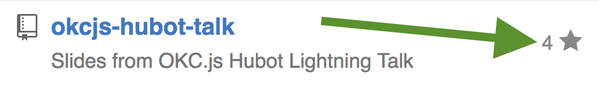
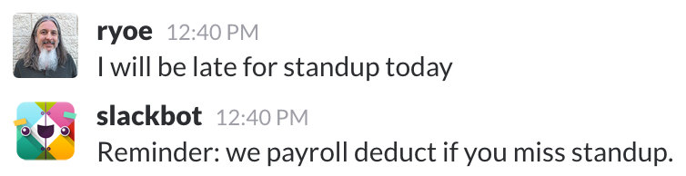
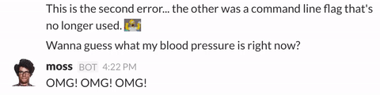
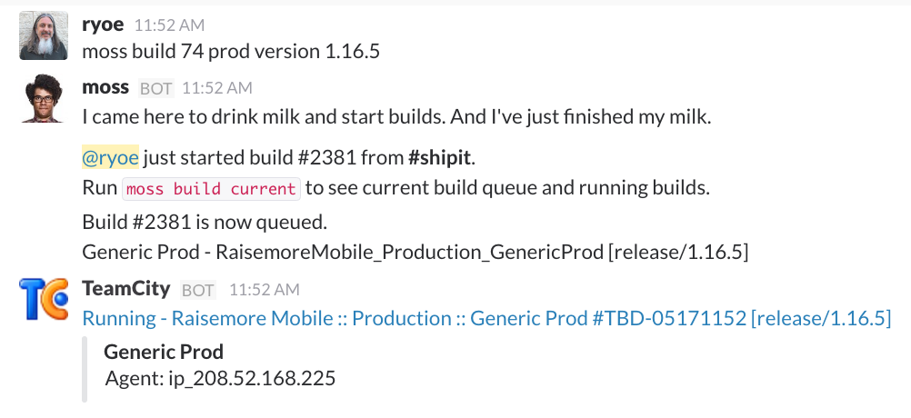
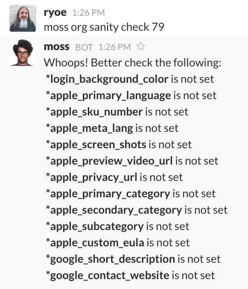
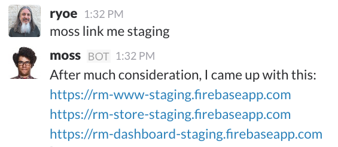
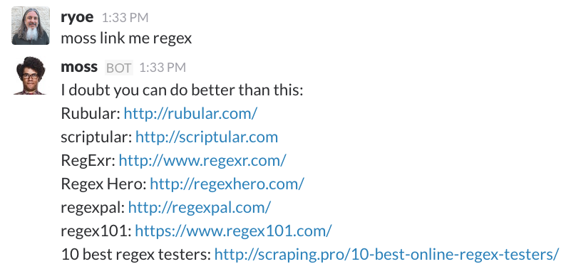
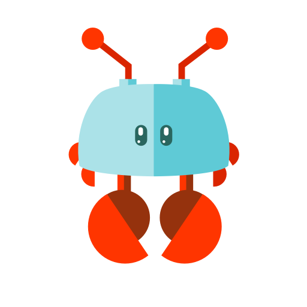
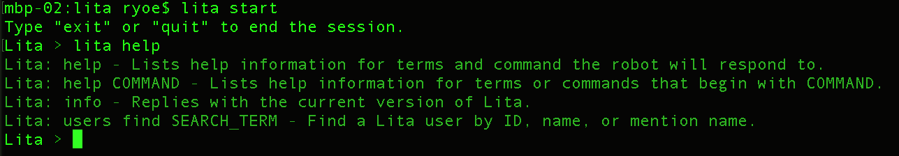
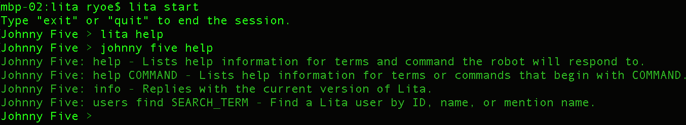

Intro to ChatOps with Lita
An Upstate Ruby lightning talk
May 25, 2016
About me
Places I have not worked
- GitHub
- StackStorm
- Atlassian
- FlowDock
- PagerDuty
- VictorOps
About me
Places I have worked
A number of companies that are not world famous. (Yet?)
Currently, Clown Shoes Wrangler at RaiseMore.
Why listen to me?
ChatOps
What is it even?
Communication
Automation
- Repeatable
- Reliable
Transparency
Fun
ChatBots
Choices
- Hubot - CoffeeScript, JavaScript
- Lita - Ruby
- Err - Python
ChatBots
What it do?
- Hear
- Respond
Hear
Example 1
Hear
Example 2
Respond
Example 1
Respond
Example 2
Respond
Example 3
Respond
Example 4

WARN:
Regular Expressions
Love 'em or hate 'em, you can't avoid them
Hello, Lita
Why Lita?
- Runs on Ruby
- Many chat adapters available
- Easy testing plugins with RSpec extras
- Leverage Ruby ecosystem:
- RubyGems
- Bundler
Requirements
- Ruby 2.x
- or JRuby 9.0.0.0+
- or Rubinus 2+
- Redis 2.6+
Install Lita
gem install lita
Create your bot
lita new
$ lita new
create lita
create lita/Gemfile
create lita/lita_config.rb
Run your bot
lita start
Name your bot
Edit lita_config.rb
Lita.configure do |config|
# The name your robot will use.
config.robot.name = "Johnny Five"
end
Name your bot
Action shot
Make a chat bot
Because Lita is better with friends!
Adapters
| * Slack | * HipChat |
| * Flowdock | * IRC |
| * Campfire | * Chatwork |
| * Gitter | |
| * Telegram | * idobata |
| * Telegram (another!) | * Tox |
| * VKontable | |
| * Discord |
Adapter
Slack Example
lita_config.rb
Lita.configure do |config|
config.robot.adapter = :slack
config.adapters.slack.token = "abcd-1234567890-hWYd21AmMH2UHAkx29vb5c1Y"
end
Gemfile
source "https://rubygems.org"
gem "lita"
gem "lita-slack"
Plugins
Extending Lita
Thank You!
Intro to ChatOps with Lita
An Upstate Ruby lightning talk
Sample Scripts upstate-ruby-demo.rb and upstate-ruby-demo-greetings.rb https://github.com/ryoe/upstate-ruby-demo
Comments or Questions?
@ryoe_ok on Twitter
ryoe on GitHub